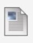

Assignment 5
Attached Files:
Homework8.png (45.086 KB)
Step 1
-
Make a page called Assignment5.html with the standard code
template and upload to the Week-4 directory.
-
Write the html that will recreate the page shown in the attached pdf file.
Step 2
-
Edit Your index.html in the root directory of your web account
and add a relative link to your homework file.